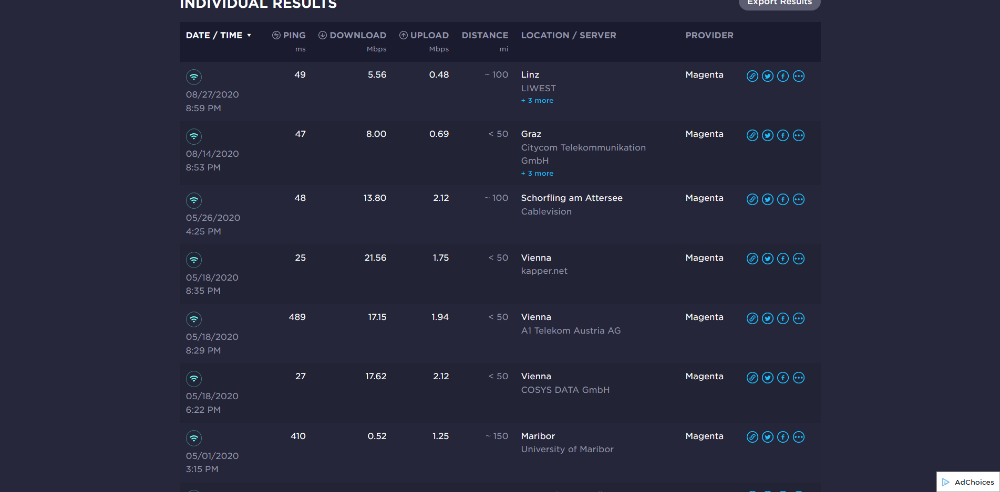

 Ich wohne in Gänserndorf und mein Flex internet ist so richtig schlecht. Bezahle für 125 mbit 40 Euro im Monat und kann froh sein wenn 15 mbit schaffe. Woran liegt das ???
Bearbeitet von GeKuHallo @GeKu
Das ist natürlich nicht erfreulich. Mobiles Internet unterliegt einen "Shared Medium" sprich du teilst dir die Bandbreite mit anderen Usern in derselben Mobilfunkzelle das besonders zur Primetime sehr spürbar ist. Versuche mal einen Speedtest über LAN(Kabel) wenn möglich durchzuführen, sollte sich dann die Bandbreite erhöhen empfehle ich dir den WLAN-Kanal im Webinterface zu wechseln bzw. das 5 GHz Band zu nützen. Wenn das alles nichts nützt, könnte man es noch mit einer besseren Hardware(Router) versuchen oder man wechselt zu einem stabilen Leitungsgebundenen Zugang über DSL, Kabel etc. wenn vorhanden.
Schau auch mal hier vorbei:
EDIT: Poste bitte auch einen Screenshot deiner Empfangswerte und nenne uns das Modell deines Routers.
Magenta Flex - langsame Downloadrate
Bearbeitet von Rexalius2000
{kind=link}